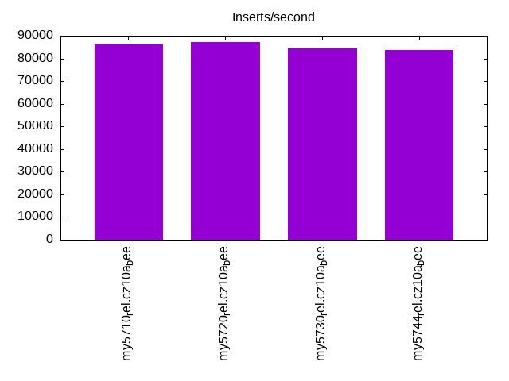
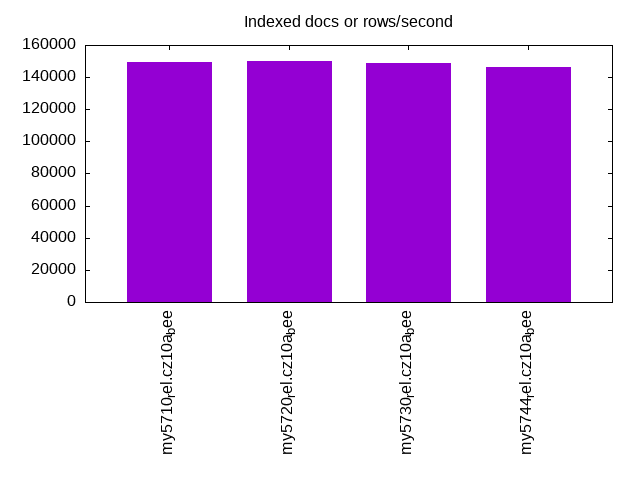
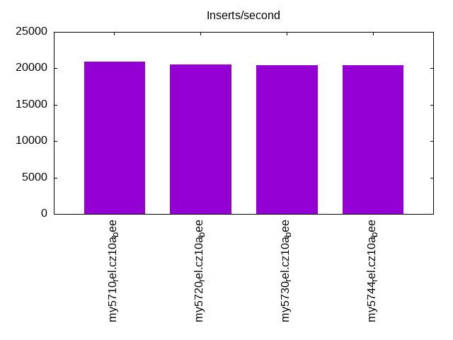
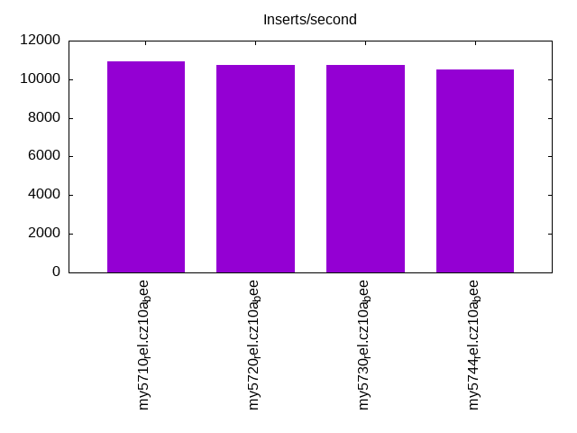
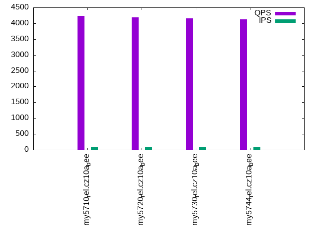
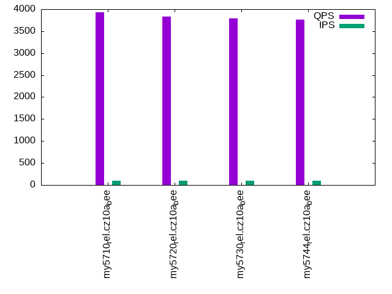
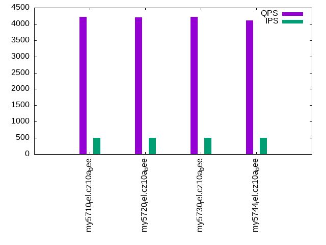
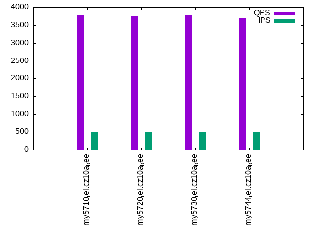
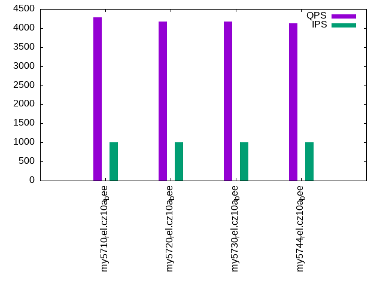
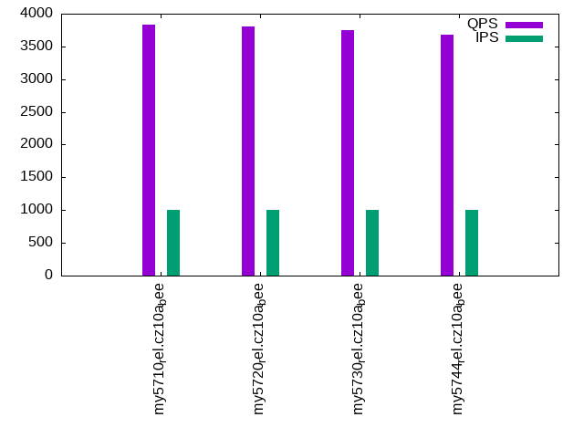

This is a report for the insert benchmark with 30M docs and 1 client(s). It is generated by scripts (bash, awk, sed) and Tufte might not be impressed. An overview of the insert benchmark is here and a short update is here. Below, by DBMS, I mean DBMS+version.config. An example is my8020.c10b40 where my means MySQL, 8020 is version 8.0.20 and c10b40 is the name for the configuration file.
The test server has 8 AMD cores, 16G RAM and an NVMe SSD. It is described here as the Beelink. The benchmark was run with 1 client and there were 1 or 3 connections per client (1 for queries or inserts without rate limits, 1+1 for rate limited inserts+deletes). It uses 1 table. It loads 30M rows per table without secondary indexes, creates 3 secondary indexes per table, then inserts 50m+50m rows per table with a delete per insert to avoid growing the table. It then does 6 read+write tests for 1800s each that do queries as fast as possible with 100,100,500,500,1000,1000 inserts/s and the same for deletes/s per client concurrent with the queries. The database is cached in memory. Clients and the DBMS share one server. The per-database configs are in the per-database subdirectories here.
The tested DBMS are:
The numbers are inserts/s for l.i0, l.i1 and l.i2, indexed docs (or rows) /s for l.x and queries/s for qr100, qp100 thru qr1000, qp1000" The values are the average rate over the entire test for inserts (IPS) and queries (QPS). The range of values for IPS and QPS is split into 3 parts: bottom 25%, middle 50%, top 25%. Values in the bottom 25% have a red background, values in the top 25% have a green background and values in the middle have no color. A gray background is used for values that can be ignored because the DBMS did not sustain the target insert rate. Red backgrounds are not used when the minimum value is within 80% of the max value.
| dbms | l.i0 | l.x | l.i1 | l.i2 | qr100 | qp100 | qr500 | qp500 | qr1000 | qp1000 |
|---|---|---|---|---|---|---|---|---|---|---|
| my5710_rel.cz10a_bee | 86207 | 149254 | 20942 | 10941 | 4237 | 3924 | 4222 | 3780 | 4280 | 3832 |
| my5720_rel.cz10a_bee | 87209 | 150000 | 20555 | 10753 | 4187 | 3833 | 4197 | 3765 | 4174 | 3799 |
| my5730_rel.cz10a_bee | 84270 | 148515 | 20460 | 10753 | 4158 | 3796 | 4211 | 3790 | 4164 | 3745 |
| my5744_rel.cz10a_bee | 83799 | 146342 | 20418 | 10504 | 4124 | 3768 | 4108 | 3697 | 4118 | 3686 |
This table has relative throughput, throughput for the DBMS relative to the DBMS in the first line, using the absolute throughput from the previous table. Values less than 0.95 have a yellow background. Values greater than 1.05 have a blue background.
| dbms | l.i0 | l.x | l.i1 | l.i2 | qr100 | qp100 | qr500 | qp500 | qr1000 | qp1000 |
|---|---|---|---|---|---|---|---|---|---|---|
| my5710_rel.cz10a_bee | 1.00 | 1.00 | 1.00 | 1.00 | 1.00 | 1.00 | 1.00 | 1.00 | 1.00 | 1.00 |
| my5720_rel.cz10a_bee | 1.01 | 1.00 | 0.98 | 0.98 | 0.99 | 0.98 | 0.99 | 1.00 | 0.98 | 0.99 |
| my5730_rel.cz10a_bee | 0.98 | 1.00 | 0.98 | 0.98 | 0.98 | 0.97 | 1.00 | 1.00 | 0.97 | 0.98 |
| my5744_rel.cz10a_bee | 0.97 | 0.98 | 0.97 | 0.96 | 0.97 | 0.96 | 0.97 | 0.98 | 0.96 | 0.96 |
This lists the average rate of inserts/s for the tests that do inserts concurrent with queries. For such tests the query rate is listed in the table above. The read+write tests are setup so that the insert rate should match the target rate every second. Cells that are not at least 95% of the target have a red background to indicate a failure to satisfy the target.
| dbms | qr100.L1 | qp100.L2 | qr500.L3 | qp500.L4 | qr1000.L5 | qp1000.L6 |
|---|---|---|---|---|---|---|
| my5710_rel.cz10a_bee | 100 | 100 | 499 | 499 | 998 | 998 |
| my5720_rel.cz10a_bee | 100 | 100 | 499 | 499 | 998 | 997 |
| my5730_rel.cz10a_bee | 100 | 100 | 499 | 499 | 997 | 998 |
| my5744_rel.cz10a_bee | 100 | 100 | 499 | 499 | 998 | 998 |
| target | 100 | 100 | 500 | 500 | 1000 | 1000 |
l.i0: load without secondary indexes. Graphs for performance per 1-second interval are here.
Average throughput:
Insert response time histogram: each cell has the percentage of responses that take <= the time in the header and max is the max response time in seconds. For the max column values in the top 25% of the range have a red background and in the bottom 25% of the range have a green background. The red background is not used when the min value is within 80% of the max value.
| dbms | 256us | 1ms | 4ms | 16ms | 64ms | 256ms | 1s | 4s | 16s | gt | max |
|---|---|---|---|---|---|---|---|---|---|---|---|
| my5710_rel.cz10a_bee | 4.581 | 95.127 | 0.284 | 0.006 | 0.002 | 0.118 | |||||
| my5720_rel.cz10a_bee | 8.024 | 91.683 | 0.286 | 0.005 | 0.002 | 0.105 | |||||
| my5730_rel.cz10a_bee | 3.060 | 96.600 | 0.199 | 0.139 | 0.002 | 0.111 | |||||
| my5744_rel.cz10a_bee | 2.324 | 97.334 | 0.200 | 0.140 | 0.002 | 0.111 |
Performance metrics for the DBMS listed above. Some are normalized by throughput, others are not. Legend for results is here.
ips qps rps rmbps wps wmbps rpq rkbpq wpi wkbpi csps cpups cspq cpupq dbgb1 dbgb2 rss maxop p50 p99 tag 86207 0 0 0.0 280.5 26.1 0.000 0.000 0.003 0.310 9029 21.8 0.105 20 2.0 18.5 2.8 0.118 86605 76444 my5710_rel.cz10a_bee 87209 0 0 0.0 283.8 26.5 0.000 0.000 0.003 0.311 9123 22.1 0.105 20 2.0 18.5 2.9 0.105 87805 76814 my5720_rel.cz10a_bee 84270 0 0 0.0 278.4 25.9 0.000 0.000 0.003 0.315 8844 21.6 0.105 21 2.0 18.5 2.9 0.111 84757 74217 my5730_rel.cz10a_bee 83799 0 0 0.0 276.1 25.8 0.000 0.000 0.003 0.315 8808 21.5 0.105 21 2.0 18.5 2.9 0.111 84512 73232 my5744_rel.cz10a_bee
l.x: create secondary indexes.
Average throughput:
Performance metrics for the DBMS listed above. Some are normalized by throughput, others are not. Legend for results is here.
ips qps rps rmbps wps wmbps rpq rkbpq wpi wkbpi csps cpups cspq cpupq dbgb1 dbgb2 rss maxop p50 p99 tag 149254 0 0 0.0 1539.6 144.6 0.000 0.000 0.010 0.992 9586 12.5 0.064 7 4.6 21.1 4.4 0.002 NA NA my5710_rel.cz10a_bee 150000 0 0 0.0 1681.2 146.5 0.000 0.000 0.011 1.000 9892 12.5 0.066 7 4.6 21.1 4.4 0.002 NA NA my5720_rel.cz10a_bee 148515 0 0 0.0 1370.0 141.3 0.000 0.000 0.009 0.974 8939 12.3 0.060 7 4.6 21.1 4.4 0.002 NA NA my5730_rel.cz10a_bee 146342 0 0 0.0 1518.2 141.4 0.000 0.000 0.010 0.989 9446 12.4 0.065 7 4.6 21.1 4.4 0.002 NA NA my5744_rel.cz10a_bee
l.i1: continue load after secondary indexes created with 50 inserts per transaction. Graphs for performance per 1-second interval are here.
Average throughput:
Insert response time histogram: each cell has the percentage of responses that take <= the time in the header and max is the max response time in seconds. For the max column values in the top 25% of the range have a red background and in the bottom 25% of the range have a green background. The red background is not used when the min value is within 80% of the max value.
| dbms | 256us | 1ms | 4ms | 16ms | 64ms | 256ms | 1s | 4s | 16s | gt | max |
|---|---|---|---|---|---|---|---|---|---|---|---|
| my5710_rel.cz10a_bee | 97.367 | 2.603 | 0.027 | 0.003 | 0.098 | ||||||
| my5720_rel.cz10a_bee | 96.925 | 3.047 | 0.025 | 0.003 | 0.093 | ||||||
| my5730_rel.cz10a_bee | 96.991 | 2.937 | 0.069 | 0.003 | 0.086 | ||||||
| my5744_rel.cz10a_bee | 96.978 | 2.950 | 0.069 | 0.003 | 0.083 |
Delete response time histogram: each cell has the percentage of responses that take <= the time in the header and max is the max response time in seconds. For the max column values in the top 25% of the range have a red background and in the bottom 25% of the range have a green background. The red background is not used when the min value is within 80% of the max value.
| dbms | 256us | 1ms | 4ms | 16ms | 64ms | 256ms | 1s | 4s | 16s | gt | max |
|---|---|---|---|---|---|---|---|---|---|---|---|
| my5710_rel.cz10a_bee | 98.247 | 1.740 | 0.010 | 0.003 | 0.103 | ||||||
| my5720_rel.cz10a_bee | 97.768 | 2.219 | 0.010 | 0.003 | 0.093 | ||||||
| my5730_rel.cz10a_bee | 97.784 | 2.195 | 0.018 | 0.003 | 0.087 | ||||||
| my5744_rel.cz10a_bee | 97.721 | 2.261 | 0.015 | 0.003 | 0.088 |
Performance metrics for the DBMS listed above. Some are normalized by throughput, others are not. Legend for results is here.
ips qps rps rmbps wps wmbps rpq rkbpq wpi wkbpi csps cpups cspq cpupq dbgb1 dbgb2 rss maxop p50 p99 tag 20942 0 0 0.0 2069.2 89.8 0.000 0.000 0.099 4.390 15157 38.3 0.724 146 6.7 23.3 7.8 0.098 21475 7641 my5710_rel.cz10a_bee 20555 0 0 0.0 2074.2 90.6 0.000 0.000 0.101 4.512 15139 38.5 0.737 150 6.6 23.1 7.7 0.093 21277 7293 my5720_rel.cz10a_bee 20460 0 0 0.0 2058.3 90.5 0.000 0.000 0.101 4.528 15103 38.2 0.738 149 6.5 23.0 7.6 0.086 21226 7741 my5730_rel.cz10a_bee 20418 0 0 0.0 2062.5 90.8 0.000 0.000 0.101 4.555 15073 37.9 0.738 148 6.5 23.0 7.6 0.083 21127 8441 my5744_rel.cz10a_bee
l.i2: continue load after secondary indexes created with 5 inserts per transaction. Graphs for performance per 1-second interval are here.
Average throughput:
Insert response time histogram: each cell has the percentage of responses that take <= the time in the header and max is the max response time in seconds. For the max column values in the top 25% of the range have a red background and in the bottom 25% of the range have a green background. The red background is not used when the min value is within 80% of the max value.
| dbms | 256us | 1ms | 4ms | 16ms | 64ms | 256ms | 1s | 4s | 16s | gt | max |
|---|---|---|---|---|---|---|---|---|---|---|---|
| my5710_rel.cz10a_bee | 0.142 | 99.604 | 0.052 | 0.201 | 0.001 | nonzero | 0.078 | ||||
| my5720_rel.cz10a_bee | 0.084 | 99.639 | 0.060 | 0.216 | 0.001 | nonzero | 0.075 | ||||
| my5730_rel.cz10a_bee | 0.026 | 99.712 | 0.046 | 0.214 | 0.001 | nonzero | 0.074 | ||||
| my5744_rel.cz10a_bee | 0.038 | 99.678 | 0.055 | 0.228 | 0.001 | nonzero | 0.074 |
Delete response time histogram: each cell has the percentage of responses that take <= the time in the header and max is the max response time in seconds. For the max column values in the top 25% of the range have a red background and in the bottom 25% of the range have a green background. The red background is not used when the min value is within 80% of the max value.
| dbms | 256us | 1ms | 4ms | 16ms | 64ms | 256ms | 1s | 4s | 16s | gt | max |
|---|---|---|---|---|---|---|---|---|---|---|---|
| my5710_rel.cz10a_bee | 0.169 | 99.605 | 0.024 | 0.201 | 0.001 | nonzero | 0.079 | ||||
| my5720_rel.cz10a_bee | 0.053 | 99.707 | 0.023 | 0.215 | 0.001 | nonzero | 0.075 | ||||
| my5730_rel.cz10a_bee | 0.066 | 99.696 | 0.024 | 0.213 | 0.001 | nonzero | 0.074 | ||||
| my5744_rel.cz10a_bee | 0.158 | 99.583 | 0.033 | 0.226 | 0.001 | nonzero | 0.074 |
Performance metrics for the DBMS listed above. Some are normalized by throughput, others are not. Legend for results is here.
ips qps rps rmbps wps wmbps rpq rkbpq wpi wkbpi csps cpups cspq cpupq dbgb1 dbgb2 rss maxop p50 p99 tag 10941 0 0 0.0 1132.1 46.9 0.000 0.000 0.103 4.389 49107 37.5 4.488 274 6.7 23.3 7.8 0.078 10918 9404 my5710_rel.cz10a_bee 10753 0 0 0.0 1120.6 46.5 0.000 0.000 0.104 4.426 48816 37.2 4.540 277 6.6 23.1 7.7 0.075 10778 9329 my5720_rel.cz10a_bee 10753 0 0 0.0 1139.0 47.0 0.000 0.000 0.106 4.475 48991 37.1 4.556 276 6.5 23.0 7.6 0.074 10733 9124 my5730_rel.cz10a_bee 10504 0 0 0.0 1111.1 46.0 0.000 0.000 0.106 4.482 44436 36.2 4.230 276 6.5 23.0 7.6 0.074 10518 9153 my5744_rel.cz10a_bee
qr100.L1: range queries with 100 insert/s per client. Graphs for performance per 1-second interval are here.
Average throughput:
Query response time histogram: each cell has the percentage of responses that take <= the time in the header and max is the max response time in seconds. For max values in the top 25% of the range have a red background and in the bottom 25% of the range have a green background. The red background is not used when the min value is within 80% of the max value.
| dbms | 256us | 1ms | 4ms | 16ms | 64ms | 256ms | 1s | 4s | 16s | gt | max |
|---|---|---|---|---|---|---|---|---|---|---|---|
| my5710_rel.cz10a_bee | 73.134 | 26.865 | nonzero | nonzero | 0.005 | ||||||
| my5720_rel.cz10a_bee | 72.645 | 27.355 | nonzero | 0.003 | |||||||
| my5730_rel.cz10a_bee | 70.938 | 29.061 | nonzero | nonzero | 0.008 | ||||||
| my5744_rel.cz10a_bee | 70.406 | 29.594 | nonzero | nonzero | 0.004 |
Insert response time histogram: each cell has the percentage of responses that take <= the time in the header and max is the max response time in seconds. For max values in the top 25% of the range have a red background and in the bottom 25% of the range have a green background. The red background is not used when the min value is within 80% of the max value.
| dbms | 256us | 1ms | 4ms | 16ms | 64ms | 256ms | 1s | 4s | 16s | gt | max |
|---|---|---|---|---|---|---|---|---|---|---|---|
| my5710_rel.cz10a_bee | 99.444 | 0.556 | 0.015 | ||||||||
| my5720_rel.cz10a_bee | 99.500 | 0.500 | 0.013 | ||||||||
| my5730_rel.cz10a_bee | 98.250 | 1.639 | 0.111 | 0.028 | |||||||
| my5744_rel.cz10a_bee | 99.583 | 0.417 | 0.009 |
Delete response time histogram: each cell has the percentage of responses that take <= the time in the header and max is the max response time in seconds. For max values in the top 25% of the range have a red background and in the bottom 25% of the range have a green background. The red background is not used when the min value is within 80% of the max value.
| dbms | 256us | 1ms | 4ms | 16ms | 64ms | 256ms | 1s | 4s | 16s | gt | max |
|---|---|---|---|---|---|---|---|---|---|---|---|
| my5710_rel.cz10a_bee | 99.417 | 0.583 | 0.012 | ||||||||
| my5720_rel.cz10a_bee | 99.611 | 0.389 | 0.014 | ||||||||
| my5730_rel.cz10a_bee | 98.611 | 1.333 | 0.056 | 0.023 | |||||||
| my5744_rel.cz10a_bee | 99.639 | 0.361 | 0.009 |
Performance metrics for the DBMS listed above. Some are normalized by throughput, others are not. Legend for results is here.
ips qps rps rmbps wps wmbps rpq rkbpq wpi wkbpi csps cpups cspq cpupq dbgb1 dbgb2 rss maxop p50 p99 tag 100 4237 0 0.0 113.7 3.2 0.000 0.000 1.140 32.916 16728 12.6 3.948 238 6.7 23.3 7.8 0.005 4190 3979 my5710_rel.cz10a_bee 100 4187 0 0.0 103.1 2.9 0.000 0.000 1.034 29.747 16501 12.6 3.941 241 6.6 23.1 7.7 0.003 4139 3916 my5720_rel.cz10a_bee 100 4158 0 0.0 109.7 3.1 0.000 0.000 1.101 31.727 16416 12.6 3.948 242 6.5 23.0 7.6 0.008 4093 3915 my5730_rel.cz10a_bee 100 4124 0 0.0 109.6 3.1 0.000 0.000 1.098 31.589 16287 12.5 3.949 242 6.5 23.0 7.6 0.004 4072 3869 my5744_rel.cz10a_bee
qp100.L2: point queries with 100 insert/s per client. Graphs for performance per 1-second interval are here.
Average throughput:
Query response time histogram: each cell has the percentage of responses that take <= the time in the header and max is the max response time in seconds. For max values in the top 25% of the range have a red background and in the bottom 25% of the range have a green background. The red background is not used when the min value is within 80% of the max value.
| dbms | 256us | 1ms | 4ms | 16ms | 64ms | 256ms | 1s | 4s | 16s | gt | max |
|---|---|---|---|---|---|---|---|---|---|---|---|
| my5710_rel.cz10a_bee | 87.925 | 12.073 | 0.002 | nonzero | 0.006 | ||||||
| my5720_rel.cz10a_bee | 86.136 | 13.861 | 0.002 | nonzero | 0.006 | ||||||
| my5730_rel.cz10a_bee | 84.521 | 15.477 | 0.002 | nonzero | 0.005 | ||||||
| my5744_rel.cz10a_bee | 83.898 | 16.101 | 0.001 | 0.004 |
Insert response time histogram: each cell has the percentage of responses that take <= the time in the header and max is the max response time in seconds. For max values in the top 25% of the range have a red background and in the bottom 25% of the range have a green background. The red background is not used when the min value is within 80% of the max value.
| dbms | 256us | 1ms | 4ms | 16ms | 64ms | 256ms | 1s | 4s | 16s | gt | max |
|---|---|---|---|---|---|---|---|---|---|---|---|
| my5710_rel.cz10a_bee | 99.389 | 0.611 | 0.015 | ||||||||
| my5720_rel.cz10a_bee | 99.472 | 0.528 | 0.009 | ||||||||
| my5730_rel.cz10a_bee | 99.611 | 0.389 | 0.016 | ||||||||
| my5744_rel.cz10a_bee | 99.500 | 0.500 | 0.013 |
Delete response time histogram: each cell has the percentage of responses that take <= the time in the header and max is the max response time in seconds. For max values in the top 25% of the range have a red background and in the bottom 25% of the range have a green background. The red background is not used when the min value is within 80% of the max value.
| dbms | 256us | 1ms | 4ms | 16ms | 64ms | 256ms | 1s | 4s | 16s | gt | max |
|---|---|---|---|---|---|---|---|---|---|---|---|
| my5710_rel.cz10a_bee | 99.389 | 0.611 | 0.012 | ||||||||
| my5720_rel.cz10a_bee | 99.500 | 0.500 | 0.008 | ||||||||
| my5730_rel.cz10a_bee | 99.667 | 0.333 | 0.016 | ||||||||
| my5744_rel.cz10a_bee | 99.444 | 0.556 | 0.013 |
Performance metrics for the DBMS listed above. Some are normalized by throughput, others are not. Legend for results is here.
ips qps rps rmbps wps wmbps rpq rkbpq wpi wkbpi csps cpups cspq cpupq dbgb1 dbgb2 rss maxop p50 p99 tag 100 3924 0 0.0 24.0 0.5 0.000 0.000 0.241 5.358 16049 13.3 4.090 271 6.7 23.3 7.8 0.006 3836 3596 my5710_rel.cz10a_bee 100 3833 0 0.0 26.2 0.6 0.000 0.000 0.263 5.984 15683 13.4 4.092 280 6.6 23.1 7.7 0.006 3756 3564 my5720_rel.cz10a_bee 100 3796 0 0.0 25.8 0.6 0.000 0.000 0.258 5.872 15534 14.0 4.092 295 6.5 23.0 7.6 0.005 3708 3484 my5730_rel.cz10a_bee 100 3768 0 0.0 24.1 0.5 0.000 0.000 0.242 5.410 15446 13.8 4.100 293 6.5 23.0 7.6 0.004 3675 3436 my5744_rel.cz10a_bee
qr500.L3: range queries with 500 insert/s per client. Graphs for performance per 1-second interval are here.
Average throughput:
Query response time histogram: each cell has the percentage of responses that take <= the time in the header and max is the max response time in seconds. For max values in the top 25% of the range have a red background and in the bottom 25% of the range have a green background. The red background is not used when the min value is within 80% of the max value.
| dbms | 256us | 1ms | 4ms | 16ms | 64ms | 256ms | 1s | 4s | 16s | gt | max |
|---|---|---|---|---|---|---|---|---|---|---|---|
| my5710_rel.cz10a_bee | 71.909 | 28.090 | nonzero | nonzero | 0.007 | ||||||
| my5720_rel.cz10a_bee | 71.551 | 28.449 | nonzero | nonzero | 0.004 | ||||||
| my5730_rel.cz10a_bee | 71.811 | 28.189 | 0.001 | 0.003 | |||||||
| my5744_rel.cz10a_bee | 69.972 | 30.028 | nonzero | 0.003 |
Insert response time histogram: each cell has the percentage of responses that take <= the time in the header and max is the max response time in seconds. For max values in the top 25% of the range have a red background and in the bottom 25% of the range have a green background. The red background is not used when the min value is within 80% of the max value.
| dbms | 256us | 1ms | 4ms | 16ms | 64ms | 256ms | 1s | 4s | 16s | gt | max |
|---|---|---|---|---|---|---|---|---|---|---|---|
| my5710_rel.cz10a_bee | 99.633 | 0.367 | 0.014 | ||||||||
| my5720_rel.cz10a_bee | 99.417 | 0.583 | 0.014 | ||||||||
| my5730_rel.cz10a_bee | 99.361 | 0.639 | 0.009 | ||||||||
| my5744_rel.cz10a_bee | 99.556 | 0.444 | 0.012 |
Delete response time histogram: each cell has the percentage of responses that take <= the time in the header and max is the max response time in seconds. For max values in the top 25% of the range have a red background and in the bottom 25% of the range have a green background. The red background is not used when the min value is within 80% of the max value.
| dbms | 256us | 1ms | 4ms | 16ms | 64ms | 256ms | 1s | 4s | 16s | gt | max |
|---|---|---|---|---|---|---|---|---|---|---|---|
| my5710_rel.cz10a_bee | 99.728 | 0.272 | 0.014 | ||||||||
| my5720_rel.cz10a_bee | 99.639 | 0.361 | 0.012 | ||||||||
| my5730_rel.cz10a_bee | 99.628 | 0.372 | 0.009 | ||||||||
| my5744_rel.cz10a_bee | 99.667 | 0.333 | 0.010 |
Performance metrics for the DBMS listed above. Some are normalized by throughput, others are not. Legend for results is here.
ips qps rps rmbps wps wmbps rpq rkbpq wpi wkbpi csps cpups cspq cpupq dbgb1 dbgb2 rss maxop p50 p99 tag 499 4222 0 0.0 57.9 1.9 0.000 0.000 0.116 3.954 16583 13.5 3.927 256 6.7 23.3 7.8 0.007 4172 3980 my5710_rel.cz10a_bee 499 4197 0 0.0 69.9 2.3 0.000 0.000 0.140 4.735 16532 13.6 3.939 259 6.6 23.1 7.7 0.004 4139 3946 my5720_rel.cz10a_bee 499 4211 0 0.0 62.2 2.1 0.000 0.000 0.125 4.266 16569 13.5 3.935 256 6.5 23.0 7.6 0.003 4141 3931 my5730_rel.cz10a_bee 499 4108 0 0.0 67.1 2.2 0.000 0.000 0.135 4.582 16193 13.5 3.942 263 6.5 23.0 7.6 0.003 4059 3868 my5744_rel.cz10a_bee
qp500.L4: point queries with 500 insert/s per client. Graphs for performance per 1-second interval are here.
Average throughput:
Query response time histogram: each cell has the percentage of responses that take <= the time in the header and max is the max response time in seconds. For max values in the top 25% of the range have a red background and in the bottom 25% of the range have a green background. The red background is not used when the min value is within 80% of the max value.
| dbms | 256us | 1ms | 4ms | 16ms | 64ms | 256ms | 1s | 4s | 16s | gt | max |
|---|---|---|---|---|---|---|---|---|---|---|---|
| my5710_rel.cz10a_bee | 83.306 | 16.688 | 0.006 | nonzero | 0.007 | ||||||
| my5720_rel.cz10a_bee | 82.921 | 17.073 | 0.006 | nonzero | 0.008 | ||||||
| my5730_rel.cz10a_bee | 83.558 | 16.438 | 0.004 | nonzero | 0.005 | ||||||
| my5744_rel.cz10a_bee | 81.915 | 18.080 | 0.005 | nonzero | 0.005 |
Insert response time histogram: each cell has the percentage of responses that take <= the time in the header and max is the max response time in seconds. For max values in the top 25% of the range have a red background and in the bottom 25% of the range have a green background. The red background is not used when the min value is within 80% of the max value.
| dbms | 256us | 1ms | 4ms | 16ms | 64ms | 256ms | 1s | 4s | 16s | gt | max |
|---|---|---|---|---|---|---|---|---|---|---|---|
| my5710_rel.cz10a_bee | 99.544 | 0.456 | 0.015 | ||||||||
| my5720_rel.cz10a_bee | 99.317 | 0.683 | 0.014 | ||||||||
| my5730_rel.cz10a_bee | 99.500 | 0.500 | 0.011 | ||||||||
| my5744_rel.cz10a_bee | 99.556 | 0.444 | 0.011 |
Delete response time histogram: each cell has the percentage of responses that take <= the time in the header and max is the max response time in seconds. For max values in the top 25% of the range have a red background and in the bottom 25% of the range have a green background. The red background is not used when the min value is within 80% of the max value.
| dbms | 256us | 1ms | 4ms | 16ms | 64ms | 256ms | 1s | 4s | 16s | gt | max |
|---|---|---|---|---|---|---|---|---|---|---|---|
| my5710_rel.cz10a_bee | 99.656 | 0.344 | 0.013 | ||||||||
| my5720_rel.cz10a_bee | 99.561 | 0.439 | 0.014 | ||||||||
| my5730_rel.cz10a_bee | 99.672 | 0.328 | 0.011 | ||||||||
| my5744_rel.cz10a_bee | 99.661 | 0.339 | 0.011 |
Performance metrics for the DBMS listed above. Some are normalized by throughput, others are not. Legend for results is here.
ips qps rps rmbps wps wmbps rpq rkbpq wpi wkbpi csps cpups cspq cpupq dbgb1 dbgb2 rss maxop p50 p99 tag 499 3780 0 0.0 80.8 2.6 0.000 0.000 0.162 5.406 15731 14.2 4.162 301 6.7 23.3 7.8 0.007 3708 3500 my5710_rel.cz10a_bee 499 3765 0 0.0 82.6 2.7 0.000 0.000 0.166 5.541 15687 13.8 4.166 293 6.6 23.1 7.7 0.008 3724 3516 my5720_rel.cz10a_bee 499 3790 0 0.0 85.4 2.8 0.000 0.000 0.171 5.744 15791 14.4 4.167 304 6.5 23.0 7.6 0.005 3707 3467 my5730_rel.cz10a_bee 499 3697 0 0.0 88.6 2.9 0.000 0.000 0.178 5.918 15456 13.9 4.181 301 6.5 23.0 7.6 0.005 3645 3420 my5744_rel.cz10a_bee
qr1000.L5: range queries with 1000 insert/s per client. Graphs for performance per 1-second interval are here.
Average throughput:
Query response time histogram: each cell has the percentage of responses that take <= the time in the header and max is the max response time in seconds. For max values in the top 25% of the range have a red background and in the bottom 25% of the range have a green background. The red background is not used when the min value is within 80% of the max value.
| dbms | 256us | 1ms | 4ms | 16ms | 64ms | 256ms | 1s | 4s | 16s | gt | max |
|---|---|---|---|---|---|---|---|---|---|---|---|
| my5710_rel.cz10a_bee | 73.741 | 26.258 | 0.001 | nonzero | 0.007 | ||||||
| my5720_rel.cz10a_bee | 71.787 | 28.212 | 0.001 | nonzero | 0.005 | ||||||
| my5730_rel.cz10a_bee | 71.627 | 28.372 | 0.001 | nonzero | 0.008 | ||||||
| my5744_rel.cz10a_bee | 70.707 | 29.292 | 0.001 | nonzero | 0.004 |
Insert response time histogram: each cell has the percentage of responses that take <= the time in the header and max is the max response time in seconds. For max values in the top 25% of the range have a red background and in the bottom 25% of the range have a green background. The red background is not used when the min value is within 80% of the max value.
| dbms | 256us | 1ms | 4ms | 16ms | 64ms | 256ms | 1s | 4s | 16s | gt | max |
|---|---|---|---|---|---|---|---|---|---|---|---|
| my5710_rel.cz10a_bee | 99.539 | 0.458 | 0.003 | 0.039 | |||||||
| my5720_rel.cz10a_bee | 99.578 | 0.419 | 0.003 | 0.049 | |||||||
| my5730_rel.cz10a_bee | 99.286 | 0.711 | 0.003 | 0.040 | |||||||
| my5744_rel.cz10a_bee | 99.464 | 0.531 | 0.006 | 0.042 |
Delete response time histogram: each cell has the percentage of responses that take <= the time in the header and max is the max response time in seconds. For max values in the top 25% of the range have a red background and in the bottom 25% of the range have a green background. The red background is not used when the min value is within 80% of the max value.
| dbms | 256us | 1ms | 4ms | 16ms | 64ms | 256ms | 1s | 4s | 16s | gt | max |
|---|---|---|---|---|---|---|---|---|---|---|---|
| my5710_rel.cz10a_bee | 99.694 | 0.303 | 0.003 | 0.040 | |||||||
| my5720_rel.cz10a_bee | 99.764 | 0.233 | 0.003 | 0.048 | |||||||
| my5730_rel.cz10a_bee | 99.486 | 0.511 | 0.003 | 0.038 | |||||||
| my5744_rel.cz10a_bee | 99.608 | 0.389 | 0.003 | 0.043 |
Performance metrics for the DBMS listed above. Some are normalized by throughput, others are not. Legend for results is here.
ips qps rps rmbps wps wmbps rpq rkbpq wpi wkbpi csps cpups cspq cpupq dbgb1 dbgb2 rss maxop p50 p99 tag 998 4280 0 0.0 124.4 4.5 0.000 0.000 0.125 4.576 17176 14.6 4.013 273 6.7 23.3 7.8 0.007 4219 3995 my5710_rel.cz10a_bee 998 4174 0 0.0 119.1 4.3 0.000 0.000 0.119 4.437 16773 14.5 4.018 278 6.6 23.1 7.7 0.005 4126 3915 my5720_rel.cz10a_bee 997 4164 0 0.0 121.3 4.4 0.000 0.000 0.122 4.516 16757 14.6 4.025 281 6.5 23.0 7.6 0.008 4094 3884 my5730_rel.cz10a_bee 998 4118 0 0.0 121.3 4.4 0.000 0.000 0.122 4.517 16575 14.6 4.025 284 6.5 23.0 7.6 0.004 4060 3836 my5744_rel.cz10a_bee
qp1000.L6: point queries with 1000 insert/s per client. Graphs for performance per 1-second interval are here.
Average throughput:
Query response time histogram: each cell has the percentage of responses that take <= the time in the header and max is the max response time in seconds. For max values in the top 25% of the range have a red background and in the bottom 25% of the range have a green background. The red background is not used when the min value is within 80% of the max value.
| dbms | 256us | 1ms | 4ms | 16ms | 64ms | 256ms | 1s | 4s | 16s | gt | max |
|---|---|---|---|---|---|---|---|---|---|---|---|
| my5710_rel.cz10a_bee | 83.235 | 16.755 | 0.010 | nonzero | 0.007 | ||||||
| my5720_rel.cz10a_bee | 82.878 | 17.112 | 0.010 | nonzero | 0.004 | ||||||
| my5730_rel.cz10a_bee | 81.611 | 18.378 | 0.011 | nonzero | 0.006 | ||||||
| my5744_rel.cz10a_bee | 80.690 | 19.301 | 0.008 | nonzero | 0.006 |
Insert response time histogram: each cell has the percentage of responses that take <= the time in the header and max is the max response time in seconds. For max values in the top 25% of the range have a red background and in the bottom 25% of the range have a green background. The red background is not used when the min value is within 80% of the max value.
| dbms | 256us | 1ms | 4ms | 16ms | 64ms | 256ms | 1s | 4s | 16s | gt | max |
|---|---|---|---|---|---|---|---|---|---|---|---|
| my5710_rel.cz10a_bee | 99.386 | 0.608 | 0.006 | 0.046 | |||||||
| my5720_rel.cz10a_bee | 99.358 | 0.639 | 0.003 | 0.040 | |||||||
| my5730_rel.cz10a_bee | 99.325 | 0.672 | 0.003 | 0.049 | |||||||
| my5744_rel.cz10a_bee | 99.389 | 0.608 | 0.003 | 0.050 |
Delete response time histogram: each cell has the percentage of responses that take <= the time in the header and max is the max response time in seconds. For max values in the top 25% of the range have a red background and in the bottom 25% of the range have a green background. The red background is not used when the min value is within 80% of the max value.
| dbms | 256us | 1ms | 4ms | 16ms | 64ms | 256ms | 1s | 4s | 16s | gt | max |
|---|---|---|---|---|---|---|---|---|---|---|---|
| my5710_rel.cz10a_bee | 99.631 | 0.364 | 0.006 | 0.049 | |||||||
| my5720_rel.cz10a_bee | 99.608 | 0.389 | 0.003 | 0.041 | |||||||
| my5730_rel.cz10a_bee | 99.564 | 0.433 | 0.003 | 0.047 | |||||||
| my5744_rel.cz10a_bee | 99.614 | 0.383 | 0.003 | 0.047 |
Performance metrics for the DBMS listed above. Some are normalized by throughput, others are not. Legend for results is here.
ips qps rps rmbps wps wmbps rpq rkbpq wpi wkbpi csps cpups cspq cpupq dbgb1 dbgb2 rss maxop p50 p99 tag 998 3832 0 0.0 121.8 4.4 0.000 0.000 0.122 4.502 16243 15.1 4.239 315 6.7 23.3 7.8 0.007 3740 3530 my5710_rel.cz10a_bee 997 3799 0 0.0 121.8 4.4 0.000 0.000 0.122 4.532 16126 15.2 4.245 320 6.6 23.1 7.7 0.004 3724 3516 my5720_rel.cz10a_bee 998 3745 0 0.0 115.0 4.2 0.000 0.000 0.115 4.307 15882 15.0 4.240 320 6.5 23.0 7.6 0.006 3676 3452 my5730_rel.cz10a_bee 998 3686 0 0.0 115.9 4.2 0.000 0.000 0.116 4.338 15667 15.2 4.251 330 6.5 23.0 7.6 0.006 3629 3418 my5744_rel.cz10a_bee
l.i0: load without secondary indexes
Performance metrics for all DBMS, not just the ones listed above. Some are normalized by throughput, others are not. Legend for results is here.
ips qps rps rmbps wps wmbps rpq rkbpq wpi wkbpi csps cpups cspq cpupq dbgb1 dbgb2 rss maxop p50 p99 tag 86207 0 0 0.0 280.5 26.1 0.000 0.000 0.003 0.310 9029 21.8 0.105 20 2.0 18.5 2.8 0.118 86605 76444 my5710_rel.cz10a_bee 87209 0 0 0.0 283.8 26.5 0.000 0.000 0.003 0.311 9123 22.1 0.105 20 2.0 18.5 2.9 0.105 87805 76814 my5720_rel.cz10a_bee 84270 0 0 0.0 278.4 25.9 0.000 0.000 0.003 0.315 8844 21.6 0.105 21 2.0 18.5 2.9 0.111 84757 74217 my5730_rel.cz10a_bee 83799 0 0 0.0 276.1 25.8 0.000 0.000 0.003 0.315 8808 21.5 0.105 21 2.0 18.5 2.9 0.111 84512 73232 my5744_rel.cz10a_bee
l.x: create secondary indexes
Performance metrics for all DBMS, not just the ones listed above. Some are normalized by throughput, others are not. Legend for results is here.
ips qps rps rmbps wps wmbps rpq rkbpq wpi wkbpi csps cpups cspq cpupq dbgb1 dbgb2 rss maxop p50 p99 tag 149254 0 0 0.0 1539.6 144.6 0.000 0.000 0.010 0.992 9586 12.5 0.064 7 4.6 21.1 4.4 0.002 NA NA my5710_rel.cz10a_bee 150000 0 0 0.0 1681.2 146.5 0.000 0.000 0.011 1.000 9892 12.5 0.066 7 4.6 21.1 4.4 0.002 NA NA my5720_rel.cz10a_bee 148515 0 0 0.0 1370.0 141.3 0.000 0.000 0.009 0.974 8939 12.3 0.060 7 4.6 21.1 4.4 0.002 NA NA my5730_rel.cz10a_bee 146342 0 0 0.0 1518.2 141.4 0.000 0.000 0.010 0.989 9446 12.4 0.065 7 4.6 21.1 4.4 0.002 NA NA my5744_rel.cz10a_bee
l.i1: continue load after secondary indexes created with 50 inserts per transaction
Performance metrics for all DBMS, not just the ones listed above. Some are normalized by throughput, others are not. Legend for results is here.
ips qps rps rmbps wps wmbps rpq rkbpq wpi wkbpi csps cpups cspq cpupq dbgb1 dbgb2 rss maxop p50 p99 tag 20942 0 0 0.0 2069.2 89.8 0.000 0.000 0.099 4.390 15157 38.3 0.724 146 6.7 23.3 7.8 0.098 21475 7641 my5710_rel.cz10a_bee 20555 0 0 0.0 2074.2 90.6 0.000 0.000 0.101 4.512 15139 38.5 0.737 150 6.6 23.1 7.7 0.093 21277 7293 my5720_rel.cz10a_bee 20460 0 0 0.0 2058.3 90.5 0.000 0.000 0.101 4.528 15103 38.2 0.738 149 6.5 23.0 7.6 0.086 21226 7741 my5730_rel.cz10a_bee 20418 0 0 0.0 2062.5 90.8 0.000 0.000 0.101 4.555 15073 37.9 0.738 148 6.5 23.0 7.6 0.083 21127 8441 my5744_rel.cz10a_bee
l.i2: continue load after secondary indexes created with 5 inserts per transaction
Performance metrics for all DBMS, not just the ones listed above. Some are normalized by throughput, others are not. Legend for results is here.
ips qps rps rmbps wps wmbps rpq rkbpq wpi wkbpi csps cpups cspq cpupq dbgb1 dbgb2 rss maxop p50 p99 tag 10941 0 0 0.0 1132.1 46.9 0.000 0.000 0.103 4.389 49107 37.5 4.488 274 6.7 23.3 7.8 0.078 10918 9404 my5710_rel.cz10a_bee 10753 0 0 0.0 1120.6 46.5 0.000 0.000 0.104 4.426 48816 37.2 4.540 277 6.6 23.1 7.7 0.075 10778 9329 my5720_rel.cz10a_bee 10753 0 0 0.0 1139.0 47.0 0.000 0.000 0.106 4.475 48991 37.1 4.556 276 6.5 23.0 7.6 0.074 10733 9124 my5730_rel.cz10a_bee 10504 0 0 0.0 1111.1 46.0 0.000 0.000 0.106 4.482 44436 36.2 4.230 276 6.5 23.0 7.6 0.074 10518 9153 my5744_rel.cz10a_bee
qr100.L1: range queries with 100 insert/s per client
Performance metrics for all DBMS, not just the ones listed above. Some are normalized by throughput, others are not. Legend for results is here.
ips qps rps rmbps wps wmbps rpq rkbpq wpi wkbpi csps cpups cspq cpupq dbgb1 dbgb2 rss maxop p50 p99 tag 100 4237 0 0.0 113.7 3.2 0.000 0.000 1.140 32.916 16728 12.6 3.948 238 6.7 23.3 7.8 0.005 4190 3979 my5710_rel.cz10a_bee 100 4187 0 0.0 103.1 2.9 0.000 0.000 1.034 29.747 16501 12.6 3.941 241 6.6 23.1 7.7 0.003 4139 3916 my5720_rel.cz10a_bee 100 4158 0 0.0 109.7 3.1 0.000 0.000 1.101 31.727 16416 12.6 3.948 242 6.5 23.0 7.6 0.008 4093 3915 my5730_rel.cz10a_bee 100 4124 0 0.0 109.6 3.1 0.000 0.000 1.098 31.589 16287 12.5 3.949 242 6.5 23.0 7.6 0.004 4072 3869 my5744_rel.cz10a_bee
qp100.L2: point queries with 100 insert/s per client
Performance metrics for all DBMS, not just the ones listed above. Some are normalized by throughput, others are not. Legend for results is here.
ips qps rps rmbps wps wmbps rpq rkbpq wpi wkbpi csps cpups cspq cpupq dbgb1 dbgb2 rss maxop p50 p99 tag 100 3924 0 0.0 24.0 0.5 0.000 0.000 0.241 5.358 16049 13.3 4.090 271 6.7 23.3 7.8 0.006 3836 3596 my5710_rel.cz10a_bee 100 3833 0 0.0 26.2 0.6 0.000 0.000 0.263 5.984 15683 13.4 4.092 280 6.6 23.1 7.7 0.006 3756 3564 my5720_rel.cz10a_bee 100 3796 0 0.0 25.8 0.6 0.000 0.000 0.258 5.872 15534 14.0 4.092 295 6.5 23.0 7.6 0.005 3708 3484 my5730_rel.cz10a_bee 100 3768 0 0.0 24.1 0.5 0.000 0.000 0.242 5.410 15446 13.8 4.100 293 6.5 23.0 7.6 0.004 3675 3436 my5744_rel.cz10a_bee
qr500.L3: range queries with 500 insert/s per client
Performance metrics for all DBMS, not just the ones listed above. Some are normalized by throughput, others are not. Legend for results is here.
ips qps rps rmbps wps wmbps rpq rkbpq wpi wkbpi csps cpups cspq cpupq dbgb1 dbgb2 rss maxop p50 p99 tag 499 4222 0 0.0 57.9 1.9 0.000 0.000 0.116 3.954 16583 13.5 3.927 256 6.7 23.3 7.8 0.007 4172 3980 my5710_rel.cz10a_bee 499 4197 0 0.0 69.9 2.3 0.000 0.000 0.140 4.735 16532 13.6 3.939 259 6.6 23.1 7.7 0.004 4139 3946 my5720_rel.cz10a_bee 499 4211 0 0.0 62.2 2.1 0.000 0.000 0.125 4.266 16569 13.5 3.935 256 6.5 23.0 7.6 0.003 4141 3931 my5730_rel.cz10a_bee 499 4108 0 0.0 67.1 2.2 0.000 0.000 0.135 4.582 16193 13.5 3.942 263 6.5 23.0 7.6 0.003 4059 3868 my5744_rel.cz10a_bee
qp500.L4: point queries with 500 insert/s per client
Performance metrics for all DBMS, not just the ones listed above. Some are normalized by throughput, others are not. Legend for results is here.
ips qps rps rmbps wps wmbps rpq rkbpq wpi wkbpi csps cpups cspq cpupq dbgb1 dbgb2 rss maxop p50 p99 tag 499 3780 0 0.0 80.8 2.6 0.000 0.000 0.162 5.406 15731 14.2 4.162 301 6.7 23.3 7.8 0.007 3708 3500 my5710_rel.cz10a_bee 499 3765 0 0.0 82.6 2.7 0.000 0.000 0.166 5.541 15687 13.8 4.166 293 6.6 23.1 7.7 0.008 3724 3516 my5720_rel.cz10a_bee 499 3790 0 0.0 85.4 2.8 0.000 0.000 0.171 5.744 15791 14.4 4.167 304 6.5 23.0 7.6 0.005 3707 3467 my5730_rel.cz10a_bee 499 3697 0 0.0 88.6 2.9 0.000 0.000 0.178 5.918 15456 13.9 4.181 301 6.5 23.0 7.6 0.005 3645 3420 my5744_rel.cz10a_bee
qr1000.L5: range queries with 1000 insert/s per client
Performance metrics for all DBMS, not just the ones listed above. Some are normalized by throughput, others are not. Legend for results is here.
ips qps rps rmbps wps wmbps rpq rkbpq wpi wkbpi csps cpups cspq cpupq dbgb1 dbgb2 rss maxop p50 p99 tag 998 4280 0 0.0 124.4 4.5 0.000 0.000 0.125 4.576 17176 14.6 4.013 273 6.7 23.3 7.8 0.007 4219 3995 my5710_rel.cz10a_bee 998 4174 0 0.0 119.1 4.3 0.000 0.000 0.119 4.437 16773 14.5 4.018 278 6.6 23.1 7.7 0.005 4126 3915 my5720_rel.cz10a_bee 997 4164 0 0.0 121.3 4.4 0.000 0.000 0.122 4.516 16757 14.6 4.025 281 6.5 23.0 7.6 0.008 4094 3884 my5730_rel.cz10a_bee 998 4118 0 0.0 121.3 4.4 0.000 0.000 0.122 4.517 16575 14.6 4.025 284 6.5 23.0 7.6 0.004 4060 3836 my5744_rel.cz10a_bee
qp1000.L6: point queries with 1000 insert/s per client
Performance metrics for all DBMS, not just the ones listed above. Some are normalized by throughput, others are not. Legend for results is here.
ips qps rps rmbps wps wmbps rpq rkbpq wpi wkbpi csps cpups cspq cpupq dbgb1 dbgb2 rss maxop p50 p99 tag 998 3832 0 0.0 121.8 4.4 0.000 0.000 0.122 4.502 16243 15.1 4.239 315 6.7 23.3 7.8 0.007 3740 3530 my5710_rel.cz10a_bee 997 3799 0 0.0 121.8 4.4 0.000 0.000 0.122 4.532 16126 15.2 4.245 320 6.6 23.1 7.7 0.004 3724 3516 my5720_rel.cz10a_bee 998 3745 0 0.0 115.0 4.2 0.000 0.000 0.115 4.307 15882 15.0 4.240 320 6.5 23.0 7.6 0.006 3676 3452 my5730_rel.cz10a_bee 998 3686 0 0.0 115.9 4.2 0.000 0.000 0.116 4.338 15667 15.2 4.251 330 6.5 23.0 7.6 0.006 3629 3418 my5744_rel.cz10a_bee
Insert response time histogram
256us 1ms 4ms 16ms 64ms 256ms 1s 4s 16s gt max tag 0.000 4.581 95.127 0.284 0.006 0.002 0.000 0.000 0.000 0.000 0.118 my5710_rel.cz10a_bee 0.000 8.024 91.683 0.286 0.005 0.002 0.000 0.000 0.000 0.000 0.105 my5720_rel.cz10a_bee 0.000 3.060 96.600 0.199 0.139 0.002 0.000 0.000 0.000 0.000 0.111 my5730_rel.cz10a_bee 0.000 2.324 97.334 0.200 0.140 0.002 0.000 0.000 0.000 0.000 0.111 my5744_rel.cz10a_bee
TODO - determine whether there is data for create index response time
Insert response time histogram
256us 1ms 4ms 16ms 64ms 256ms 1s 4s 16s gt max tag 0.000 0.000 97.367 2.603 0.027 0.003 0.000 0.000 0.000 0.000 0.098 my5710_rel.cz10a_bee 0.000 0.000 96.925 3.047 0.025 0.003 0.000 0.000 0.000 0.000 0.093 my5720_rel.cz10a_bee 0.000 0.000 96.991 2.937 0.069 0.003 0.000 0.000 0.000 0.000 0.086 my5730_rel.cz10a_bee 0.000 0.000 96.978 2.950 0.069 0.003 0.000 0.000 0.000 0.000 0.083 my5744_rel.cz10a_bee
Delete response time histogram
256us 1ms 4ms 16ms 64ms 256ms 1s 4s 16s gt max tag 0.000 0.000 98.247 1.740 0.010 0.003 0.000 0.000 0.000 0.000 0.103 my5710_rel.cz10a_bee 0.000 0.000 97.768 2.219 0.010 0.003 0.000 0.000 0.000 0.000 0.093 my5720_rel.cz10a_bee 0.000 0.000 97.784 2.195 0.018 0.003 0.000 0.000 0.000 0.000 0.087 my5730_rel.cz10a_bee 0.000 0.000 97.721 2.261 0.015 0.003 0.000 0.000 0.000 0.000 0.088 my5744_rel.cz10a_bee
Insert response time histogram
256us 1ms 4ms 16ms 64ms 256ms 1s 4s 16s gt max tag 0.142 99.604 0.052 0.201 0.001 nonzero 0.000 0.000 0.000 0.000 0.078 my5710_rel.cz10a_bee 0.084 99.639 0.060 0.216 0.001 nonzero 0.000 0.000 0.000 0.000 0.075 my5720_rel.cz10a_bee 0.026 99.712 0.046 0.214 0.001 nonzero 0.000 0.000 0.000 0.000 0.074 my5730_rel.cz10a_bee 0.038 99.678 0.055 0.228 0.001 nonzero 0.000 0.000 0.000 0.000 0.074 my5744_rel.cz10a_bee
Delete response time histogram
256us 1ms 4ms 16ms 64ms 256ms 1s 4s 16s gt max tag 0.169 99.605 0.024 0.201 0.001 nonzero 0.000 0.000 0.000 0.000 0.079 my5710_rel.cz10a_bee 0.053 99.707 0.023 0.215 0.001 nonzero 0.000 0.000 0.000 0.000 0.075 my5720_rel.cz10a_bee 0.066 99.696 0.024 0.213 0.001 nonzero 0.000 0.000 0.000 0.000 0.074 my5730_rel.cz10a_bee 0.158 99.583 0.033 0.226 0.001 nonzero 0.000 0.000 0.000 0.000 0.074 my5744_rel.cz10a_bee
Query response time histogram
256us 1ms 4ms 16ms 64ms 256ms 1s 4s 16s gt max tag 73.134 26.865 nonzero nonzero 0.000 0.000 0.000 0.000 0.000 0.000 0.005 my5710_rel.cz10a_bee 72.645 27.355 nonzero 0.000 0.000 0.000 0.000 0.000 0.000 0.000 0.003 my5720_rel.cz10a_bee 70.938 29.061 nonzero nonzero 0.000 0.000 0.000 0.000 0.000 0.000 0.008 my5730_rel.cz10a_bee 70.406 29.594 nonzero nonzero 0.000 0.000 0.000 0.000 0.000 0.000 0.004 my5744_rel.cz10a_bee
Insert response time histogram
256us 1ms 4ms 16ms 64ms 256ms 1s 4s 16s gt max tag 0.000 0.000 99.444 0.556 0.000 0.000 0.000 0.000 0.000 0.000 0.015 my5710_rel.cz10a_bee 0.000 0.000 99.500 0.500 0.000 0.000 0.000 0.000 0.000 0.000 0.013 my5720_rel.cz10a_bee 0.000 0.000 98.250 1.639 0.111 0.000 0.000 0.000 0.000 0.000 0.028 my5730_rel.cz10a_bee 0.000 0.000 99.583 0.417 0.000 0.000 0.000 0.000 0.000 0.000 0.009 my5744_rel.cz10a_bee
Delete response time histogram
256us 1ms 4ms 16ms 64ms 256ms 1s 4s 16s gt max tag 0.000 0.000 99.417 0.583 0.000 0.000 0.000 0.000 0.000 0.000 0.012 my5710_rel.cz10a_bee 0.000 0.000 99.611 0.389 0.000 0.000 0.000 0.000 0.000 0.000 0.014 my5720_rel.cz10a_bee 0.000 0.000 98.611 1.333 0.056 0.000 0.000 0.000 0.000 0.000 0.023 my5730_rel.cz10a_bee 0.000 0.000 99.639 0.361 0.000 0.000 0.000 0.000 0.000 0.000 0.009 my5744_rel.cz10a_bee
Query response time histogram
256us 1ms 4ms 16ms 64ms 256ms 1s 4s 16s gt max tag 87.925 12.073 0.002 nonzero 0.000 0.000 0.000 0.000 0.000 0.000 0.006 my5710_rel.cz10a_bee 86.136 13.861 0.002 nonzero 0.000 0.000 0.000 0.000 0.000 0.000 0.006 my5720_rel.cz10a_bee 84.521 15.477 0.002 nonzero 0.000 0.000 0.000 0.000 0.000 0.000 0.005 my5730_rel.cz10a_bee 83.898 16.101 0.001 0.000 0.000 0.000 0.000 0.000 0.000 0.000 0.004 my5744_rel.cz10a_bee
Insert response time histogram
256us 1ms 4ms 16ms 64ms 256ms 1s 4s 16s gt max tag 0.000 0.000 99.389 0.611 0.000 0.000 0.000 0.000 0.000 0.000 0.015 my5710_rel.cz10a_bee 0.000 0.000 99.472 0.528 0.000 0.000 0.000 0.000 0.000 0.000 0.009 my5720_rel.cz10a_bee 0.000 0.000 99.611 0.389 0.000 0.000 0.000 0.000 0.000 0.000 0.016 my5730_rel.cz10a_bee 0.000 0.000 99.500 0.500 0.000 0.000 0.000 0.000 0.000 0.000 0.013 my5744_rel.cz10a_bee
Delete response time histogram
256us 1ms 4ms 16ms 64ms 256ms 1s 4s 16s gt max tag 0.000 0.000 99.389 0.611 0.000 0.000 0.000 0.000 0.000 0.000 0.012 my5710_rel.cz10a_bee 0.000 0.000 99.500 0.500 0.000 0.000 0.000 0.000 0.000 0.000 0.008 my5720_rel.cz10a_bee 0.000 0.000 99.667 0.333 0.000 0.000 0.000 0.000 0.000 0.000 0.016 my5730_rel.cz10a_bee 0.000 0.000 99.444 0.556 0.000 0.000 0.000 0.000 0.000 0.000 0.013 my5744_rel.cz10a_bee
Query response time histogram
256us 1ms 4ms 16ms 64ms 256ms 1s 4s 16s gt max tag 71.909 28.090 nonzero nonzero 0.000 0.000 0.000 0.000 0.000 0.000 0.007 my5710_rel.cz10a_bee 71.551 28.449 nonzero nonzero 0.000 0.000 0.000 0.000 0.000 0.000 0.004 my5720_rel.cz10a_bee 71.811 28.189 0.001 0.000 0.000 0.000 0.000 0.000 0.000 0.000 0.003 my5730_rel.cz10a_bee 69.972 30.028 nonzero 0.000 0.000 0.000 0.000 0.000 0.000 0.000 0.003 my5744_rel.cz10a_bee
Insert response time histogram
256us 1ms 4ms 16ms 64ms 256ms 1s 4s 16s gt max tag 0.000 0.000 99.633 0.367 0.000 0.000 0.000 0.000 0.000 0.000 0.014 my5710_rel.cz10a_bee 0.000 0.000 99.417 0.583 0.000 0.000 0.000 0.000 0.000 0.000 0.014 my5720_rel.cz10a_bee 0.000 0.000 99.361 0.639 0.000 0.000 0.000 0.000 0.000 0.000 0.009 my5730_rel.cz10a_bee 0.000 0.000 99.556 0.444 0.000 0.000 0.000 0.000 0.000 0.000 0.012 my5744_rel.cz10a_bee
Delete response time histogram
256us 1ms 4ms 16ms 64ms 256ms 1s 4s 16s gt max tag 0.000 0.000 99.728 0.272 0.000 0.000 0.000 0.000 0.000 0.000 0.014 my5710_rel.cz10a_bee 0.000 0.000 99.639 0.361 0.000 0.000 0.000 0.000 0.000 0.000 0.012 my5720_rel.cz10a_bee 0.000 0.000 99.628 0.372 0.000 0.000 0.000 0.000 0.000 0.000 0.009 my5730_rel.cz10a_bee 0.000 0.000 99.667 0.333 0.000 0.000 0.000 0.000 0.000 0.000 0.010 my5744_rel.cz10a_bee
Query response time histogram
256us 1ms 4ms 16ms 64ms 256ms 1s 4s 16s gt max tag 83.306 16.688 0.006 nonzero 0.000 0.000 0.000 0.000 0.000 0.000 0.007 my5710_rel.cz10a_bee 82.921 17.073 0.006 nonzero 0.000 0.000 0.000 0.000 0.000 0.000 0.008 my5720_rel.cz10a_bee 83.558 16.438 0.004 nonzero 0.000 0.000 0.000 0.000 0.000 0.000 0.005 my5730_rel.cz10a_bee 81.915 18.080 0.005 nonzero 0.000 0.000 0.000 0.000 0.000 0.000 0.005 my5744_rel.cz10a_bee
Insert response time histogram
256us 1ms 4ms 16ms 64ms 256ms 1s 4s 16s gt max tag 0.000 0.000 99.544 0.456 0.000 0.000 0.000 0.000 0.000 0.000 0.015 my5710_rel.cz10a_bee 0.000 0.000 99.317 0.683 0.000 0.000 0.000 0.000 0.000 0.000 0.014 my5720_rel.cz10a_bee 0.000 0.000 99.500 0.500 0.000 0.000 0.000 0.000 0.000 0.000 0.011 my5730_rel.cz10a_bee 0.000 0.000 99.556 0.444 0.000 0.000 0.000 0.000 0.000 0.000 0.011 my5744_rel.cz10a_bee
Delete response time histogram
256us 1ms 4ms 16ms 64ms 256ms 1s 4s 16s gt max tag 0.000 0.000 99.656 0.344 0.000 0.000 0.000 0.000 0.000 0.000 0.013 my5710_rel.cz10a_bee 0.000 0.000 99.561 0.439 0.000 0.000 0.000 0.000 0.000 0.000 0.014 my5720_rel.cz10a_bee 0.000 0.000 99.672 0.328 0.000 0.000 0.000 0.000 0.000 0.000 0.011 my5730_rel.cz10a_bee 0.000 0.000 99.661 0.339 0.000 0.000 0.000 0.000 0.000 0.000 0.011 my5744_rel.cz10a_bee
Query response time histogram
256us 1ms 4ms 16ms 64ms 256ms 1s 4s 16s gt max tag 73.741 26.258 0.001 nonzero 0.000 0.000 0.000 0.000 0.000 0.000 0.007 my5710_rel.cz10a_bee 71.787 28.212 0.001 nonzero 0.000 0.000 0.000 0.000 0.000 0.000 0.005 my5720_rel.cz10a_bee 71.627 28.372 0.001 nonzero 0.000 0.000 0.000 0.000 0.000 0.000 0.008 my5730_rel.cz10a_bee 70.707 29.292 0.001 nonzero 0.000 0.000 0.000 0.000 0.000 0.000 0.004 my5744_rel.cz10a_bee
Insert response time histogram
256us 1ms 4ms 16ms 64ms 256ms 1s 4s 16s gt max tag 0.000 0.000 99.539 0.458 0.003 0.000 0.000 0.000 0.000 0.000 0.039 my5710_rel.cz10a_bee 0.000 0.000 99.578 0.419 0.003 0.000 0.000 0.000 0.000 0.000 0.049 my5720_rel.cz10a_bee 0.000 0.000 99.286 0.711 0.003 0.000 0.000 0.000 0.000 0.000 0.040 my5730_rel.cz10a_bee 0.000 0.000 99.464 0.531 0.006 0.000 0.000 0.000 0.000 0.000 0.042 my5744_rel.cz10a_bee
Delete response time histogram
256us 1ms 4ms 16ms 64ms 256ms 1s 4s 16s gt max tag 0.000 0.000 99.694 0.303 0.003 0.000 0.000 0.000 0.000 0.000 0.040 my5710_rel.cz10a_bee 0.000 0.000 99.764 0.233 0.003 0.000 0.000 0.000 0.000 0.000 0.048 my5720_rel.cz10a_bee 0.000 0.000 99.486 0.511 0.003 0.000 0.000 0.000 0.000 0.000 0.038 my5730_rel.cz10a_bee 0.000 0.000 99.608 0.389 0.003 0.000 0.000 0.000 0.000 0.000 0.043 my5744_rel.cz10a_bee
Query response time histogram
256us 1ms 4ms 16ms 64ms 256ms 1s 4s 16s gt max tag 83.235 16.755 0.010 nonzero 0.000 0.000 0.000 0.000 0.000 0.000 0.007 my5710_rel.cz10a_bee 82.878 17.112 0.010 nonzero 0.000 0.000 0.000 0.000 0.000 0.000 0.004 my5720_rel.cz10a_bee 81.611 18.378 0.011 nonzero 0.000 0.000 0.000 0.000 0.000 0.000 0.006 my5730_rel.cz10a_bee 80.690 19.301 0.008 nonzero 0.000 0.000 0.000 0.000 0.000 0.000 0.006 my5744_rel.cz10a_bee
Insert response time histogram
256us 1ms 4ms 16ms 64ms 256ms 1s 4s 16s gt max tag 0.000 0.000 99.386 0.608 0.006 0.000 0.000 0.000 0.000 0.000 0.046 my5710_rel.cz10a_bee 0.000 0.000 99.358 0.639 0.003 0.000 0.000 0.000 0.000 0.000 0.040 my5720_rel.cz10a_bee 0.000 0.000 99.325 0.672 0.003 0.000 0.000 0.000 0.000 0.000 0.049 my5730_rel.cz10a_bee 0.000 0.000 99.389 0.608 0.003 0.000 0.000 0.000 0.000 0.000 0.050 my5744_rel.cz10a_bee
Delete response time histogram
256us 1ms 4ms 16ms 64ms 256ms 1s 4s 16s gt max tag 0.000 0.000 99.631 0.364 0.006 0.000 0.000 0.000 0.000 0.000 0.049 my5710_rel.cz10a_bee 0.000 0.000 99.608 0.389 0.003 0.000 0.000 0.000 0.000 0.000 0.041 my5720_rel.cz10a_bee 0.000 0.000 99.564 0.433 0.003 0.000 0.000 0.000 0.000 0.000 0.047 my5730_rel.cz10a_bee 0.000 0.000 99.614 0.383 0.003 0.000 0.000 0.000 0.000 0.000 0.047 my5744_rel.cz10a_bee